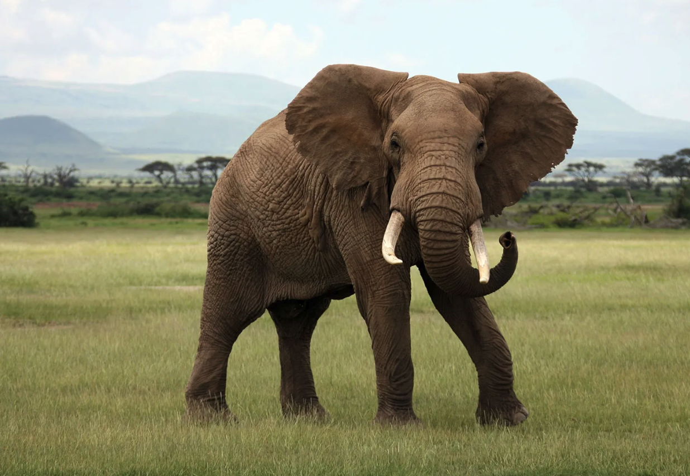

Mating & Reproduction
With the longest pregnancy of any land mammal and extraordinary parental bonds, the African elephant's approach to reproduction is a story of patience, devotion, and deep family connection.
The longest pregnancy of any land animal. This extended development allows the calf's brain to mature enough for the complex social learning it will need to survive.
Elephants almost always give birth to a single calf. Twin births are extremely rare, occurring in fewer than 1% of pregnancies.
Calves stay close to their mothers for at least 4 to 5 years. Females often remain with the family herd for their entire lives.
Musth and Courtship
Male elephants experience a periodic hormonal condition called musth, during which testosterone levels surge to 60 times above normal. Bulls in musth become highly aggressive and single-minded in their search for receptive females. The condition is visible through swelling of the temporal glands on the sides of the head and a continuous stream of strong-smelling secretion.
Females in estrus produce deep, low-frequency rumbles that travel through the ground and air for several kilometers, alerting distant bulls. When a male in musth locates a receptive female, a brief courtship unfolds. The bull demonstrates his fitness by staying close, resting his trunk on her back, and gently guiding her. The actual mating lasts only about 45 seconds, but the pair may remain together for several days.
Interesting fact: Not all males experience musth at the same time. Younger bulls have shorter and less intense musth periods. This staggering ensures that dominant, experienced males are most likely to father the next generation.
The Longest Wait in the Animal Kingdom
At approximately 22 months (around 660 days), the African elephant has the longest gestation period of any land mammal. By comparison, a human pregnancy lasts 9 months and a horse pregnancy lasts 11 months. This extraordinarily long development time is necessary because elephant calves are born with relatively advanced brains, allowing them to stand, walk, and follow the herd within hours of birth.
- Birth Weight Newborns weigh 90 to 120 kg (200 to 265 lbs) and stand about 85 cm (33 inches) at the shoulder.
- Birth Setting The mother typically gives birth surrounded by other females in the herd, who form a protective circle. Births usually occur at night or in the early morning.
- Standing Calves can stand within 1 hour of birth and walk with the herd within 2 days.
- Breeding Interval Females typically give birth every 4 to 5 years, one of the slowest reproductive rates among mammals.
- Sexual Maturity Females: 10 to 12 years. Males: 12 to 15 years, though they rarely mate successfully before their mid-twenties.
How Long the Offspring Lives with the Parent
Elephant calves remain dependent on their mothers for at least 4 to 5 years, one of the longest periods of parental care in the animal kingdom. During this time, the calf learns every essential survival skill by observing and imitating its mother and the other females in the herd.
Birth – 6 Months
The calf nurses exclusively on its mother's milk, consuming up to 11 liters per day. It stays within trunk's reach of its mother at all times and begins learning to use its trunk for grasping.
6 Months – 2 Years
The calf begins experimenting with solid food, nibbling on grasses and leaves while continuing to nurse. It starts forming bonds with other calves in the herd through play and gentle sparring.
2 – 3 Years
Weaning gradually occurs. The calf eats more vegetation and nurses less frequently. Social learning intensifies as the calf watches adults forage, bathe, and communicate.
3 – 5 Years
The calf becomes increasingly independent but stays near its mother. It can feed itself entirely but still relies on the herd for protection and guidance.
5+ Years: Diverging Paths
Females typically remain with the family herd for life, eventually helping raise the next generation of calves. Males gradually separate between ages 12 and 15, joining loose bachelor groups or living as solitary bulls.
It Takes a Herd
Allomothering
Elephant calves are raised by the entire herd, not just the mother. Older sisters, aunts, and grandmothers all participate in protecting, guiding, and disciplining the young. This cooperative care system is called "allomothering" and gives first-time mothers practice before having their own calves.
The Matriarch's Role
The oldest female leads the herd using decades of accumulated knowledge about where to find food and water, which routes are safe, and how to respond to threats. Her experience is critical for the survival of every calf in the group, especially during droughts and in unfamiliar territory.
Learning by Watching
Calves learn which plants to eat, where water is found, how to use their trunks effectively, and how to interact socially by closely observing the adults around them. This knowledge transfer across generations is essential to the species' survival.
Did you know? When a new calf is born, the entire herd often gathers around it, touching and smelling the newborn with their trunks in what researchers describe as a "birth celebration." This communal bonding cements the calf's place in the family group from its very first moments.